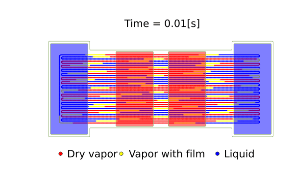
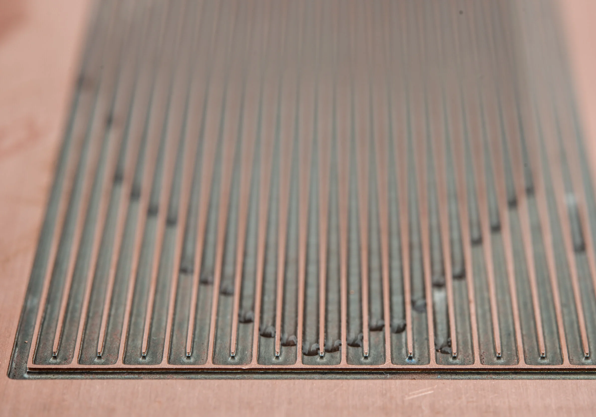

Research Program
Oscillating Heat Pipe Modeling
I develop predictive, computationally efficient models for oscillating heat pipes and related thermal-fluid systems, with the goal of connecting first-principles simulation to compact, reliable thermal management for spacecraft, electronics, and other constrained engineering systems.

OHPs provide a demanding testbed for predictive thermal-fluid modeling because device-level performance emerges from coupled phase change, slug motion, wall conduction, and operating limits. Better models can help translate advanced passive cooling concepts into practical design tools for applications where volume, mass, power, and operating margin matter. In the animation, red marks the heater and blue marks the condenser.
What Makes OHPs Unique

An oscillating heat pipe is a capillary-scale serpentine channel partially filled with working fluid and embedded in a solid substrate. Unlike a conventional heat pipe, it does not rely on a wick structure to return liquid from the condenser to the evaporator. Instead, the liquid and vapor naturally form a train of plugs and bubbles whose self-sustained oscillations transport heat between hot and cold regions.
OHPs can move large heat loads with few mechanical parts, making them attractive for spacecraft, electronics, and confined systems.
Performance emerges from phase change, slug motion, wall conduction, capillarity, gravity, and contact-line dynamics.
Small changes in geometry, filling ratio, orientation, or heat load can shift the device from start-up to stable operation or dryout.
These same features make OHPs difficult to predict. Their operation is nonlinear, history-dependent, and often regime-changing: a model must capture enough physics to predict start-up, thermal conductance, oscillatory behavior, and failure limits, while remaining lightweight enough to be useful during design.
Research Goals
Develop experimentally validated models that can predict start-up, oscillatory transport, thermal conductance, inclination effects, and dryout before hardware is built. This goal is centered on compact thermal management for spacecraft, electronics, and confined systems where operating margin matters.
Build physics-based, reduced-order, and data-assisted tools that preserve the essential thermal-fluid physics while remaining fast enough for repeated design studies, calibration, uncertainty analysis, operating-envelope exploration, and future real-time control.
Animations

Numerical Model
The numerical model treats the solid substrate and fluid channels as coupled but distinct physics modules. The solid module solves transient heat conduction in the plate, while channel heating and evaporator/condenser regions are represented through immersed forcing terms. The fluid module advances one-dimensional mass, momentum, and energy balances for the liquid-vapor train.
This reduced description is designed to preserve the physics most important for prediction: conjugate heat transfer, nucleate boiling, film evaporation and condensation, wall-fluid coupling, gravity effects, and dryout.
Experimental Validation
The model has been validated against OHP experiments over multiple heat loads and gravitational orientations, with comparisons focused on thermal conductance, transient temperature evolution, operating regime changes, and dryout thresholds. These comparisons are central to the project: the goal is not only to reproduce qualitative oscillations, but to predict engineering quantities that matter for design.
Research Outputs
Effects of inclination angle on oscillating heat pipe thermal conductance and dryout. ASME Journal of Heat and Mass Transfer, accepted, 2026.
A Conjugate Heat Transfer Model of Oscillating Heat Pipe Dynamics, Performance, and Dryout. International Journal of Heat and Mass Transfer, 2024.
A data assimilation model of oscillating heat pipe dynamics and performance. Joint International Heat Pipe Conference and International Heat Pipe Symposium, 2023.
Estimating thermofluid system parameters using a Markov chain Monte Carlo method, with an example of oscillating heat pipes. APS Division of Fluid Dynamics, 2023.
Open-source Code
I am interested in making research software reusable for the thermal-fluid community. The OHP modeling effort is connected to open, inspectable computational tools and examples that support reproducibility, model development, and more accessible thermal-design workflows.
Future Directions
The next stage of this research program is to extend the current physics-based modeling framework toward faster, more design-aware prediction for compact and resource-constrained thermal systems. Current directions of interest include:
Rapid evaluation across operating conditions.
Targeted support for physical closure models and parameter inference.
State tracking and operational-limit awareness for thermal systems.
Geometry, filling ratio, orientation, and heat-load tradeoffs.